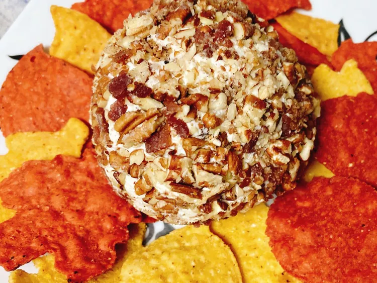

4 Ingredient Bacon Ranch Cheese Ball

This yummy cheese ball is sure to be a favorite at your next gathering. Serve with tortilla chips or crackers!
Ingredients:
- 4 strips bacon
- 1 (8 ounce) package cream cheese, softened
- 2 tablespoons dry ranch dressing mix
- ¼ cup chopped pecans
Directions:
- Place bacon in a large skillet and cook over medium-high heat, turning occasionally, until evenly browned, about 10 minutes. Transfer bacon strips to a lined baking sheet with a drip tray. Refrigerate bacon until crisp.
- In a bowl spread out cream cheese and sprinkle ranch seasoning over the cheese. Blend together until well combined.
- Chop bacon until it resembles fine crumbs. Reserve 2 tablespoons. Add remaining bacon to the cream cheese mixture. Using clean (gloved) hands roll cream cheese mixture into a ball. Refrigerate for 30 minutes.
- Combine chopped pecans and reserved bacon in a small bowl. Cover cream cheese ball with pecan bacon mixture. Refrigerate until ready to serve. Let come to room temperature about 30 minutes before serving.